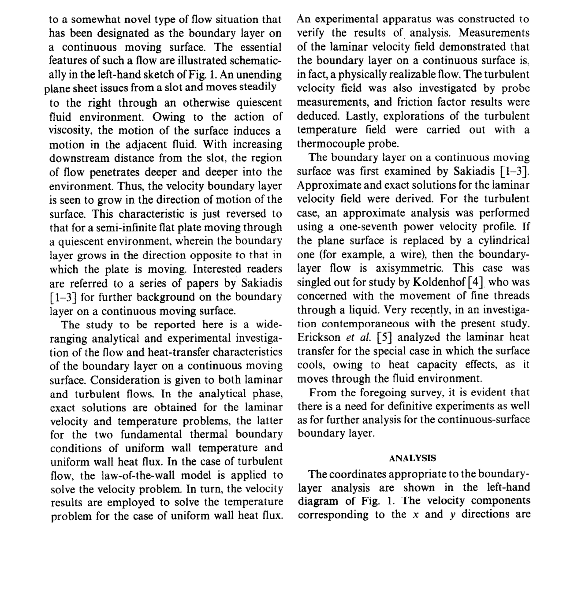
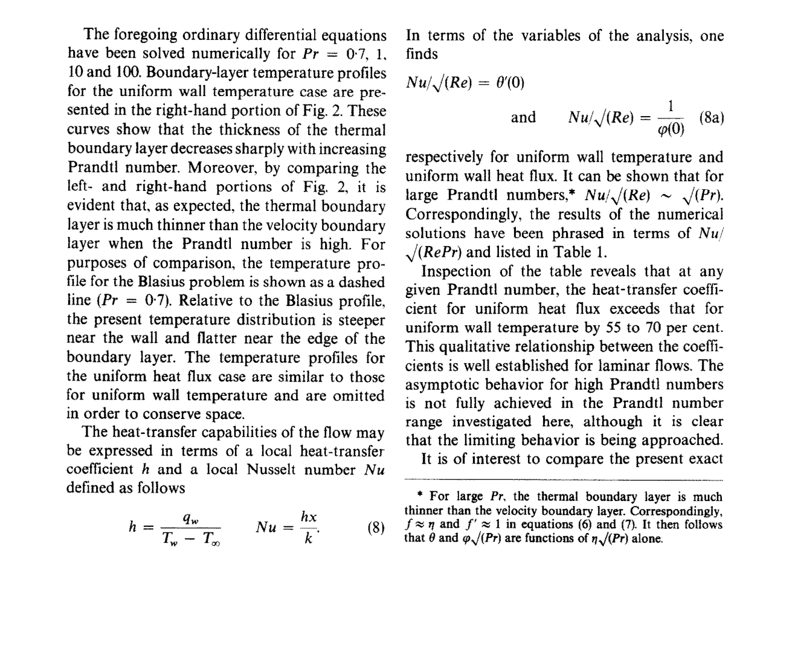
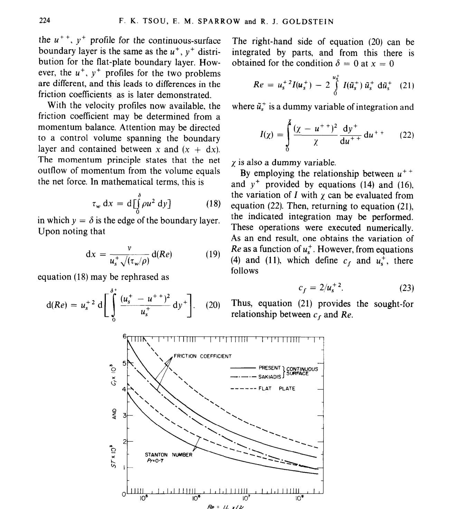
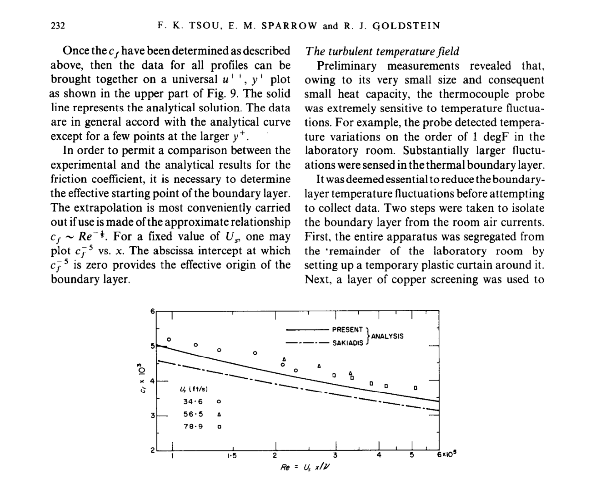

01中文摘要
对连续运动表面边界层的流动与温度场进行解析与实验研究，涵盖层流和湍流。解析给出速度、温度分布及表面摩阻与传热系数；层流速度场测量与预测高度一致，证明连续运动表面上的边界层在物理上可实现。湍流速度型与解析也符合良好，用 Clauser 图得到的摩阻系数同样吻合；湍流温度分布测量与理论满意对应。
原始摘要（英文/原文）
A combined analytical and experimental study of the flow and temperature fields in the boundary layer on a continuous moving surface has been carried out. The investigation includes both laminar and turbulent flow conditions. The analytical solutions provide results for the boundary-layer veolcity and temperature distributions and for the surface-friction and heat-transfer coefficients. Measurements of the laminar velocity field are in excellent agreement with the analytical predictions, thereby verifying that a mathematically describable boundary layer on a continuous moving surface is a physically realizable flow. Experimentally determined turbulent velocity profiles are also in very good accord with those of analysis. Similar agreement is found to exist for friction coeflicients deduced from the data by application of the Clauser-plot technique. Temperature distribution measurements, carried out for the turbulent boundary layer, show satisfactory correspondence with analysis.
02阅读说明
实验+解析（理论）研究，1967年 Int. J. Heat Mass Transfer 论文；bundle 含17页全文、11幅图与表1，完整性好。公式文本层存在 OCR 乱码，已用原 PDF 第3–8页核对式(1)–(34)的符号与编号；图9、图11为实验散点，可读性中等。提取口径：以解析结果、转鼓实验工况与对比结论为主线。 文章类型：期刊
03一句话核心与三句话摘要
连续运动表面边界层：解析给出层流/湍流摩擦与传热，转鼓实验证实层流速度场物理可实现。
- 连续运动表面边界层此前只有 Sakiadis 等的少量解析工作，缺少确定性实验，湍流传热与均匀热流工况亦未充分研究。 AI概括
- 用相似变换求层流精确解、用壁律加动量和能量积分求湍流解，并在旋转转鼓上测量层流/湍流速度与温度剖面。 AI概括
- 层流速度型与解析高度吻合，证实该流动物理可实现；湍流摩擦系数与 Stanton 数低于平板，实验 cf 约高6%。 AI概括
04核心内容清单
| 要点 | 类型 | 重要性 | 原文依据 | 属性 |
|---|---|---|---|---|
| 层流相似解化为 f'''+½ff''=0，边界条件与 Blasius 互换，cf√Re=2f''(0)=0.888，高于平板0.664。 | 解析结果 | A | 式(2)–(4a)，p221 | 原文明确 |
| 层流 UWT/UHF 传热由式(6)(7)数值求解，Nu/√(RePr) 列于表1；UHF 比 UWT 高55%–70%。 | 解析结果 | A | 表1，p222 | 原文明确 |
| Pr=0.7、UWT 时连续表面 Nu/√Re=0.349，平板为0.293；整个 Pr 范围内层流换热均高于平板。 | 定量对比 | B | p223 | 原文明确 |
| 湍流局部 cf 随 Re 下降且低于平板，与层流的大小关系相反；Sakiadis 1/7幂律结果偏低10%–25%。 | 解析结果 | A | 图3、p225 | 原文明确 |
| 湍流 St 亦低于平板，作者明确称这与层流换热结果相反。 | 解析结果 | A | 图3下部、p227 | 原文明确 |
| 实验用旋转转鼓模拟连续运动表面：直径12.6 in、长24 in，刮板定起点，曲率效应可忽略。 | 实验装置 | A | p227–228、图5 | 原文明确 |
| 层流速度剖面在 Re=5×10^4–1.5×10^5 内由相似变量统一，与解析线很好吻合，仅大 η 处略高（归因室内扰动）。 | 实验验证 | A | 图6、p230 | 原文明确 |
| 14条湍流剖面（Re=10^5–6×10^5）经 Clauser 图定 cf，实测比本文解析高约6%，比 Sakiadis 高约15%。 | 实验验证 | A | 图8–10、p232 | 原文明确 |
| 湍流温度剖面与解析“满意但不如速度场”，实验 St 在 Re=1.1×10^5 为0.00265，解析为0.00304（低约13%）。 | 实验验证 | A | 图9、p234 | 原文明确 |
| 实验 qw 在下游站位基本不变，未出现理论预期的≤6%下降；作者认为这与测量/壁况有关。 | 实验异常 | B | 图11、p234 | 原文明确 |
| 实验壁况更接近 UWT，而湍流分析按 UHF 进行，作者认为这是 St 偏低的部分原因。 | 机理解释 | B | p234 | 原文明确 |
| 转鼓半径足够大，曲率效应可忽略，流动近似平面连续表面。 | 假设 | C | p227 | 原文明确 |
05引言：研究问题与领域缺口
研究对象是一块从狭缝抽出、在原本静止流体中连续运动的平面（图1左），其边界层沿运动方向增厚，与半无限平板相反。作者指出 Sakiadis[1-3]已给出层流近似与精确解、并用1/7幂律近似湍流；Koldenhof[4]研究圆柱（细丝）轴对称情形；Erickson 等[5]分析运动薄片因热容而冷却的层流换热。缺口是：缺少确定性实验，且湍流与热边界层分析不足。本文目标是同时给出层流（UWT 与 UHF）和湍流（UHF）的解析解，并用转鼓实验验证速度场、摩擦系数与温度场（p219–220）。
06流动条件与几何构型
| 项目 | 数值/描述 | 依据 | 备注 |
|---|---|---|---|
| 来流 | 环境流体静止（quiescent）；未给出马赫数，按不可压处理 | p219–220 | 文中未提及 M∞、湍流度与噪声级 |
| 表面运动 | 连续表面速度 Us 恒定；转鼓转速600–1500 r/min | p229 | 图10图例给出 Us=34.6、56.5、76.9 ft/s 三种表面速度 |
| 雷诺数范围（层流实验） | Re=Usx/ν=5×10^4–1.5×10^5 | p230 | 三个转速 |
| 雷诺数范围（湍流实验） | Re=10^5–6×10^5 | p232 | 14条剖面 |
| Prandtl 数 | 实验气体 Pr=0.7；解析取 Pr=0.7、1、10、100 | p222、p227 | |
| 层流热边界条件 | 解析分别取均匀壁温 UWT 与均匀热流 UHF | p221–222 | 两组结果均给出 |
| 湍流热边界条件 | 解析按 UHF；实验壁况更接近 UWT | p226、p234 | 作者明确承认二者不一致 |
| 实验加热 | 两种加热率，壁面-环境温差约60 degF 与30 degF | p233 | 每工况4个周向站位 |
| 几何 | 旋转圆筒直径12.6 in、长24 in；刮板铝板宽12 in（厚度OCR缺失）；圆筒壁厚0.37 in | p227–228 | 二维、无压力梯度；刮板厚度受限于材料，无法确认 |
| 边界层状态 | 层流自然发展；湍流经直径0.006 in、距壁0.003 in 的绊线触发（20°–30°站位之间） | p230 | |
| 壁面温度测量 | 6支热敏电阻埋入壁面0.050 in以内；转鼓表面温度近似周向均匀 | p228 | |
| 环境控制 | 塑料帘隔离实验台、铜网屏蔽支架，边界层温度脉动降为原来一半；仅在午夜后安静时段取数 | p232–233 |
07核心现象与关键参数
| 参数 | 定义 | 数值 | 关系/说明 | 依据 |
|---|---|---|---|---|
| 层流摩擦系数 | cf=τw/(½ρUs²)，Re=Usx/ν | cf√Re=0.888（连续表面）；平板0.664 | cf√Re=2f''(0) | 式(4)(4a)，p221 |
| 层流 Nu（UWT） | Nu/√(RePr) | Pr=0.7:0.4174；1.0:0.4438；10:0.5314；100:0.5545 | Nu/√Re=θ'(0) | 表1，p222 |
| 层流 Nu（UHF） | Nu/√(RePr) | Pr=0.7:0.7216；1.0:0.7512；10:0.8500；100:0.8753 | Nu/√Re=1/φ(0) | 表1，p222 |
| 层流 Nu/√Re（Pr=0.7） | UWT | 连续表面0.349；平板0.293 | p223 | |
| UHF/UWT 换热比 | 同一 Pr 下两壁况的传热系数比 | 高55%–70% | p222 | |
| Deissler 常数 | εm/ν=n²u+y+ | n=0.109 | 式(13)，p223 | |
| 对数律 | u++=u_s+−(1/κ)ln(y+/y_s+) 的数值形式 | u++=4.75+2.5ln y+；κ=0.4，u_s+=12.9，y_s+=26 | 式(16)(17)，p223 | |
| 湍流 cf 实验偏差 | Clauser 图测得 cf 与解析比较 | 实测高约6%；Sakiadis 低约15% | p232、图10 | |
| Stanton 数对比 | St=h/(ρcpUs) | Re=1.1×10^5：实验0.00265，解析0.00304（低约13%） | St=1/(T_s+u_s+) | 式(34)，p227、p234 |
| 湍流剖面数量与范围 | Clauser 图分析的湍流速度剖面 | 14条，Re=10^5–6×10^5 | p232 | |
| 实验表面速度 | 图10图例 | 34.6、56.5、76.9 ft/s | 图10，p232 |
08方法与数据
解析：层流采用相似变换式(1)，把动量与连续方程化为 Blasius 型方程(2)，边界条件为 f'(0)=1、f(0)=0、f'(∞)=0；能量方程对 UWT 与 UHF 分别化为式(6)、(7)，对 Pr=0.7、1、10、100 数值求解。湍流：采用壁律，近壁用 Deissler 涡扩散模型 εm/ν=n²u+y+（n=0.109），外层用对数律 u++=4.75+2.5ln y+；再由式(18)–(23)的动量积分得 cf(Re)，由式(26)–(34)的能量积分得 St(Re)。实验：以直径12.6 in、长24 in的立式旋转转鼓模拟连续运动平面，刮板固定边界层起点；转鼓内设三组加热器（上下护热、中间试验段），六支热敏电阻埋入壁面0.050 in以内，经滑环引信号；转速600–1500 r/min。速度用扁平冲击管（0.027×0.0286 in）配U形水柱微压计，温度用0.001 in 铬镍-康铜热电偶；探针可沿周向每10°定位，径向由千分头读数（p221–229）。
| 项目 | 内容 | 依据 | 备注 |
|---|---|---|---|
| 层流相似变换 | η=y√(Us/(νx))，u=Us f'(η)，v=½√(νUs/x)(ηf'−f) | 式(1)，p221 | |
| 层流动量方程 | f'''+½ff''=0；f'(0)=1、f(0)=0、f'(∞)=0 | 式(2)(3)，p221 | |
| 层流能量方程 | UWT：θ''+½Pr fθ'=0；UHF：φ''−½Pr(f'φ−fφ')=0，均数值求解 | 式(6)(7)，p221 | |
| 层流数值范围 | Pr=0.7、1、10、100 | p222 | |
| 湍流近壁模型 | Deissler 涡扩散：εm/ν=n²u+y+，n=0.109；积分得式(14)，y_s+=26处与对数律连续 | 式(13)(14)，p223 | |
| 湍流外层 | 对数律，κ=0.4，u_s+=12.9；u++=4.75+2.5ln y+ | 式(16)(17)，p223 | |
| 湍流摩擦系数 | 对控制体做动量平衡，式(18)–(23)数值积分得 cf(Re)；平均 cf 由式(24)(25) | p224–225 | |
| 湍流换热 | 取 εh=εm、Pr≈1、qw/q≈1，式(26)–(34)数值积分得 St(Re)，仅算 Pr=0.7 | p226–227 | |
| 实验装置 | 旋转转鼓+刮板；三组独立加热器（上下护热、中间试验段）；六支热敏电阻；滑环传输 | p227–229、图5 | |
| 速度测量 | 扁平冲击管0.027×0.0286 in，U形水柱微压计+移测显微镜（0.0001 in）；探针 Re<30 不测 | p229 | |
| 温度测量 | 0.001 in 铬镍-康铜热电偶（结点厚度OCR不清，约0.002 in）；积分数字电压表（3 mV），每个位置25个1 s平均值 | p229、p233 | |
| 摩擦系数反演 | Clauser 图：将实测1−u/Us 对 yUs/ν 与参数 cf 的解析曲线拟合 | p231、式(35) | |
| 局部热流反演 | 类似 Clauser 图的 T+ 参数化拟合，取最佳 qw | p233、式(36) | |
| 不确定度/重复性 | 温度25次平均标准差约1 degF（高热流）与0.5 degF（低热流）；转速由计数器+秒表；未给综合不确定度 | p233 |
09核心推导与公式
先用相似变换把连续运动表面的层流动量/能量方程化为常微分方程并数值求解；湍流则用壁律给出 u++(y+)，再通过动量与能量控制体积分把壁面剪应力和热流与 Reynolds 数联系起来。
关键假设
- 二维、定常、不可压、常物性连续介质
- 环境流体静止、无外部压力梯度，表面以恒定 Us 连续运动
- 层流能量方程为非耗散（nondissipative）形式
- 层流热边界条件分别取 UWT 与 UHF
- 湍流分析忽略边界层外缘尾迹区，采用壁律
- 近壁 εh=εm，Pr 不远离1，且 q/qw≈1、τ/τw≈1
- 湍流换热的解析只针对 UHF
推导过程
引入相似变量 η 与仅依赖 η 的流函数 f，使 u=Us f'、v 由连续方程给出；表面 y=0 对应 η=0。
代入动量与连续方程后得到与 Blasius 方程同形但边界条件互换的常微分方程；因非线性，不能把两个问题互相变换。数值解给出 f''(0)，从而得摩擦系数。
对 UWT 定义 θ、对 UHF 定义 φ；相似变换后分别得到 θ 与 φ 的常微分方程，并在给定 Pr 下数值积分。
用壁面尺度定义 u+、y+ 及相对速度 u++；近壁取 Deissler 涡扩散模型，积分得 y+(u++) 的误差函数形式；外层取对数律，并在 y_s+=26 处与内层连续。
对跨边界层的控制体做动量平衡，利用 dx 与 d(Re) 的关系把方程写成 u++、y+ 的积分；对式(20)分部积分得到 Re 与 u_s+ 的关系，其中 I(χ) 由壁律速度型数值求得；最后由 cf=2/u_s+² 得 cf(Re)。
由湍流热流表达式与 T+ 定义，近壁用 εh=εm 得 dT+/du+ 的积分式，外层取 T+−T_s+=u++−u_s+；再对热边界层控制体做能量平衡，得到 T_s+ 的积分表达式，最终 St=1/(T_s+u_s+)。所有积分数值完成，取 Pr=0.7。
适用边界：推导假设不可压、常物性、无压力梯度、环境静止；湍流部分依赖壁律与 εh=εm、Pr≈1，且只算 UHF；忽略尾迹区与曲率。原文未给出高 Mach 数、变物性、强压力梯度下的推广。
10结果：主要发现与关键证据
层流：连续表面速度型在壁面更陡、边界层外缘更平（图2）；cf√Re=0.888，高于平板的0.664（p221）。传热系数随 Pr 增大而升高，UHF 比 UWT 高55%–70%（表1，p222）；Pr=0.7、UWT 时 Nu/√Re=0.349，高于平板的0.293（p223）。湍流：局部与平均 cf 均低于平板（图3、图4），Sakiadis 的1/7幂律结果比本文低10%–25%；St 亦低于平板，与层流相反（p225、p227）。实验：层流速度剖面在 Re=5×10^4–1.5×10^5 内被相似变量统一并与解析线吻合（图6）；14条湍流剖面（Re=10^5–6×10^5）用 Clauser 图定 cf，实测比解析高约6%，与 Sakiadis 差约15%（图8–10）；湍流温度剖面与解析大体满意但不如速度场（图9）；Re=1.1×10^5 时实验与解析 St 分别为0.00265与0.00304（p230–234）。
| 发现 | 证据 | 证据类型 | 强度 | 位置 | 属性 |
|---|---|---|---|---|---|
| 层流速度剖面在 Re=5×10^4–1.5×10^5 内由相似变量统一，并与解析线高度吻合。 | 图6中三个转速、多个周向站位的实测点落在同一条解析曲线上，仅大 η 处略高 | 实验-解析对比 | 强 | 图6、p230 | 原文明确 |
| 连续运动表面的层流摩擦系数高于平板。 | cf√Re=0.888，对比 Blasius 的0.664 | 解析定量 | 强 | 式(4a)、p221 | 原文明确 |
| 层流 UHF 的换热系数比 UWT 高55%–70%，且整个 Pr 范围内连续表面均高于平板。 | 表1四组 Pr 数据；Pr=0.7 时 Nu/√Re 为0.349对0.293 | 解析定量 | 强 | 表1、p222–223 | 原文明确 |
| 湍流局部与平均摩擦系数随 Re 增加而下降，且低于平板；Sakiadis 的1/7幂律近似偏低10%–25%。 | 图3、图4中三条曲线（本文、Sakiadis、平板）的相对位置 | 解析对比 | 强 | 图3、图4、p225 | 原文明确 |
| 湍流 Stanton 数低于平板，与层流换热的大小关系相反。 | 图3下部 St 曲线；正文明确对比 | 解析对比 | 强 | 图3、p227 | 原文明确 |
| Clauser 图反演的湍流 cf 与本文解析相差约6%，明显优于 Sakiadis 的约15%。 | 14条剖面、图8–10；正文给出6%与15% | 实验验证 | 强 | 图8–10、p232 | 原文明确 |
| 湍流温度场与解析的吻合程度不如速度场，实验 St 系统性偏低。 | 图9下部 T+ 剖面；Re=1.1×10^5 时0.00265对0.00304 | 实验-解析对比 | 中 | 图9、p234 | 原文明确 |
| 实测局部热流沿下游基本不变，未出现理论预期的下降。 | 站位8、9、10、11的 Clauser 型 qw 拟合；理论预期降幅≤6% | 实验异常 | 中 | 图11、p234 | 原文明确 |
11机制解释与论证链
连续运动表面通过黏性把动量传入静止流体，形成沿运动方向增厚的边界层。层流时壁面速度梯度比平板大，故 cf 与 Nu 均高于平板；UHF 下壁面附近温度梯度更大，换热系数比 UWT 高55%–70%。湍流时无量纲 u++、y+ 分布与平板相同，但 u+、y+ 分布不同，使 cf 与 St 低于平板；作者没有给出更进一步的湍流结构解释。实验上，转鼓曲率、室内扰动与热边界条件差异是偏差的主要来源（p224、p227、p230、p234）。
12讨论：结论、贡献与局限
机制上，运动表面通过黏性带动静止流体，壁面速度梯度大于平板，故层流摩擦与换热均增强；湍流时 u++、y+ 分布与平板相同，但 u+、y+ 分布不同，导致 cf 与 St 反而低于平板（p224、p227）。作者把层流实验视为“解析可描述的连续表面边界层是物理可实现流动”的直接证据（p230）。局限包括：实验为不可压、低亚声速流动，未涉及压缩性；湍流分析忽略尾迹区并取 εh=εm、Pr≈1；实验壁况接近 UWT 而湍流分析为 UHF；温度测量仅最低转速、Re 范围窄，未给出 St-Re 图；实验 St 系统性偏低，作者归因于热边界条件差异与测量困难（p233–234）。
作者结论
作者结论：(1) 层流实验与精确解的优秀吻合证明“解析可描述的连续运动表面边界层”是物理可实现的流动，转鼓是可行实验手段；(2) 湍流速度场解析得到实验的有力支持，Clauser 图反演的 cf 与解析相差约6%；(3) 湍流温度场解析与实验满意但支持度不如速度场；(4) 层流时连续表面的 cf 与 Nu 高于平板，湍流时 cf 与 St 低于平板（p230、p232、p234）。
主要贡献
- 给出连续运动表面层流 UWT 与 UHF 的精确相似解及 Nu 表
- 把壁律与动量/能量积分结合，给出湍流 cf(Re) 与 St(Re) 的完整预测
- 搭建旋转转鼓实验，首次系统验证层流速度场、湍流速度/温度场与摩擦系数
- 明确指出层流与湍流摩擦/换热相对平板的反向关系
局限与未解决问题
作者承认：湍流分析忽略尾迹区、取 εh=εm 和 Pr≈1；实验为不可压低亚声速，未覆盖压缩性；温度测量仅最低转速、Re 范围窄；实验壁况接近 UWT 而湍流解析为 UHF；实验 St 偏低且 qw 下游不变的原因未完全查清。AI 识别的局限：未给测量综合不确定度；速度探针在低探针 Re 下不测，近壁数据可能缺失；转鼓曲率与周向压力梯度未定量评估；湍流温度剖面散点较少，图9可读性有限。
13对高速流动与工程的意义
对高速流动的启示主要是方法层面：连续运动壁面（如运动带、旋转机械表面、连续铸造/拉膜、再入体表面材料运动）的边界层与静止平板有系统性差异，层流与湍流的偏差方向相反，不能直接用平板修正。其“解析+转鼓实验+Clauser 图”的组合可作为壁面运动效应实验验证的范式；但结果限于不可压、常物性、零压力梯度，不能直接回答高超声速可压缩、强激波干扰下的摩擦/热流问题（AI 推断）。
14核心图件




15可引用原文素材
| 原文短句 | 可支持的观点 | 位置 | 使用建议 |
|---|---|---|---|
| “a mathematically describable boundary layer on a continuous moving surface is a physically realizable flow” | 层流实验验证的核心结论 | 摘要，p219 | 论证连续表面边界层的物理可实现性 |
| “the friction coefficient for the present problem exceeds that for the flat plate” | 层流 cf 高于平板 | p221 | 层流摩擦对比 |
| “uniform heat flux exceeds that for uniform wall temperature by 55 to 70 per cent” | UHF 与 UWT 的定量差异 | p222 | 热边界条件敏感性 |
| “the flat-plate results lie higher than those for the continuous surface” | 湍流 cf 低于平板 | p225 | 湍流摩擦对比 |
| “the Stanton number for the continuous surface is lower than that for the flat plate” | 湍流换热低于平板，与层流相反 | p227 | 湍流换热对比 |
| “the measured values of cf are about 6 per cent higher than the curve” | 实验与解析的6%偏差 | p232 | 验证精度表述 |
| “the experimental and analytical values of Stanton number are 0.00265 and 0.00304” | St 的13%偏低 | p234 | 定量偏差引用 |
| “the analysis is for uniform wall heat flux, while the experimental condition more closely approximated uniform wall temperature” | 实验与解析热边界条件不一致 | p234 | 解释偏差与局限 |
16最终核验
| 核验项 | 结论 |
|---|---|
| 仅基于全文 | 是：仅使用 bundle 文本、图注与图件清单；公式因文本层乱码，按允许范围用原 PDF 第3–8页核对符号与式号，未引入外部知识。 |
| A 级要点有依据 | 是：A级要点均有式号、表1、图3/4/6/10或具体页码支撑；定量值均回查正文/表。 |
| 属性标注 | 是：three_sentence、core_points、findings 均标原文明确/AI概括/AI推断。 |
| 覆盖范围 | 17页全文、11幅图、表1均覆盖；结果、方法、讨论、局限完整；温度场图9为散点，细节可读性中等。 |
| 无编造 | 未编造页码、图号、公式或数据；无 M∞、来流湍流度、综合不确定度等信息处写文中未提及。 |
需回原文确认
- 原文未给出来流马赫数与压缩性影响，结论能否外推到高速可压缩流？
- 实验 St 系统性偏低13%，除 UWT/UHF 差异外是否还有探针导热、辐射或壁面热损？
- 为何实测 qw 沿下游基本不变，与理论≤6%下降不符？
- 湍流温度剖面仅取最低转速，Re 范围窄，St(Re) 实验趋势是否可靠？
- 转鼓曲率与周向压力梯度对 cf、St 的定量影响未评估。
- 近壁速度数据因探针 Re<30 被舍弃，是否影响 Clauser 图拟合的壁面区？
17关联文献
依据标签、板块、构型与作者脉络自动关联，可据此追踪同一问题的前序与后续工作。
18引用格式
选择期刊风格后复制；出处保留原刊名。BibTeX 可直接用于 LaTeX。
引用格式
Tsou, F. K., Sparrow, E. M. & Goldstein, R. J. 1967 Flow and heat transfer in the boundary layer on a continuous moving surface. International Journal of Heat and Mass Transfer 10 (2), 219–235. https://doi.org/10.1016/0017-9310(67)90100-7
PDF上传 PDF 并更新本页
本页缺少全文、摘要或图件时，可在浏览器本地补入 PDF。解析完全在本机完成，不上传网络；完成后会更新本页的 PDF 打开链接、原摘要、IMRaD 机器抽取、关键句与含图页面。复杂的公式语义与中文深度解读仍以原文和既有精读记录为准。
Zotero 笔记摘录
用不到 在实验上证实了Sakiadis流动的物理真实性，摩阻和传热系数均高于经典Blasius平板。 连续运动平板中的湍流摩擦系数低于经典平板——与层流相反